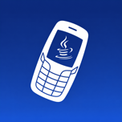

chanlx86
软件源
软件
归档
说明
GitHub ↗
HELLO, LEGACY iOS
chanlx86 软件源
♥
把喜欢的旧设备，继续用下去。
应用 · 移植 · 修复补丁
关于本站 ›

J2ME模拟器
build65
›
存档浏览器
0.9.0
›
录屏大师
0.6.1
›
搜索软件
全部
应用
补丁
应用
J2ME模拟器
让功能机时代的 Java 游戏重回掌心。
build65 · iOS 6+ · IPA
安装
存档浏览器
用原生界面，探索 Internet Archive。
0.9.0 · iOS 9+ · IPA
安装
录屏大师
为老 iPad 留下有画面、有声音的记录。
0.6.1 · iOS 9.x · 32 位 · DEB
Cydia
LocalSend
让旧 iPad 也能轻松参与局域网传输。
0.7.0 · iOS 9+ · ARMv7 · IPA
安装
Troubadour
面向旧 iOS 的 YouTube 客户端。
1.6.1 · ARMv7 iOS 5.1+ / ARM64 iOS 7+ · IPA
安装
维基文库
在旧设备上，安静地读一本书。
0.2.0 · iOS 9+ · IPA
安装
兼容修复补丁
Onegram 登录修复
修复登录入口与验证码位数限制。
0.2.0 · iOS 9+ · DEB
Cydia
Wikipedia 正文兼容
让旧版 Wikipedia 重新显示正文。
0.1.0 · iOS 9+ · DEB
Cydia
爱丽丝快跑启动修复
保护异常的网络响应，恢复游戏启动。
1.0.0 · ARMv7 · rootful 越狱 · DEB
Cydia
洛克图鉴 · 横屏修复
找回被截断的横屏页面。
1.0.0 · iOS 6+ · ARMv7 · DEB
Cydia
没有匹配的软件，请试试其他关键词。
未启用脚本时仍可浏览和下载全部软件。